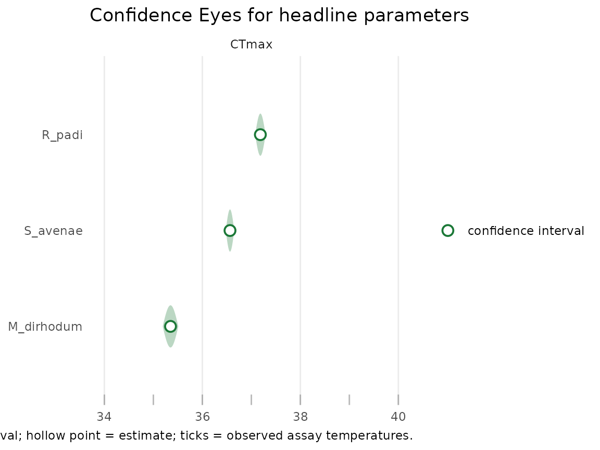
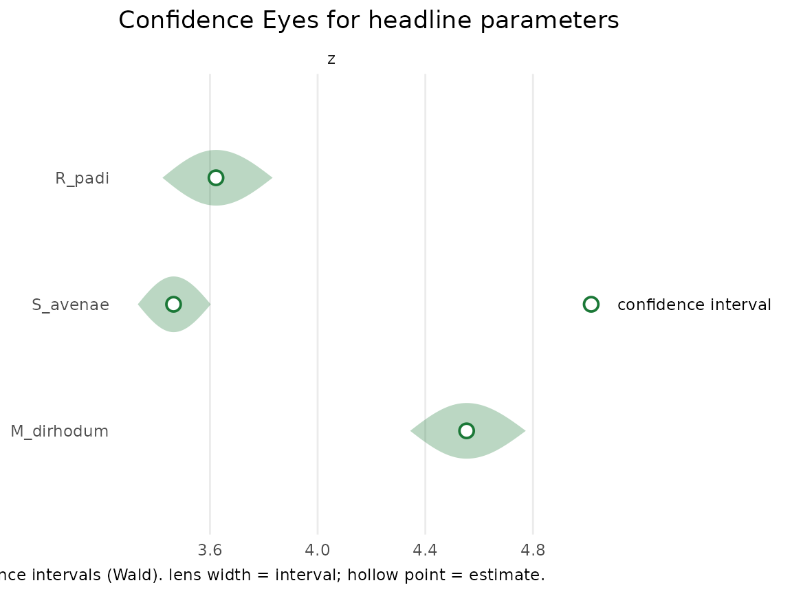
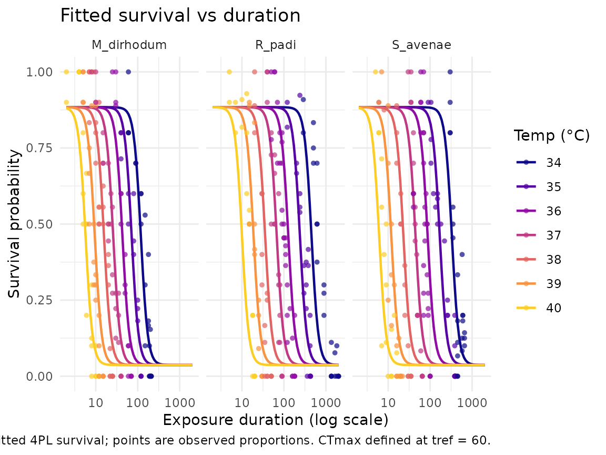

Case study: heat tolerance of three cereal aphid species (Li 2023)
Source:vignettes/case-study-li-aphids.Rmd
case-study-li-aphids.RmdThis article compares the heat tolerance of three cereal
aphid species — Metopolophium dirhodum,
Rhopalosiphum padi, and Sitobion avenae — from the
thermal-tolerance assays of Li et al. (2023). It asks the
comparative-physiology question directly: do the species differ in their
critical temperature CTmax and thermal-sensitivity slope
z? It mirrors the cereal-aphid case study in bayesTLS,
fit here by maximum likelihood instead of MCMC, with one
CTmax and one z per species.
The dataset and the question
aphid_tdt is vendored from bayesTLS (Li et
al. 2023) under CC0; cite the source and
citation("freqTLS") when you use it (see
?aphid_tdt). It records survival counts in a temperature ×
duration grid for the three species, crossed with a cold and a heat
exposure branch and three nymph ages.
We take the heat branch at a single focal age
(6-day-old nymphs) so the cross-species comparison is made at one
consistent developmental stage, and let CTmax and
z depend on species. (The other ages and the cold branch
are available in aphid_tdt for the same workflow.)
data(aphid_tdt)
aphids <- subset(aphid_tdt, branch == "heat" & age == "6")
table(aphids$species)
#>
#> M_dirhodum S_avenae R_padi
#> 169 165 165
std <- standardize_data(
aphids,
temp = "temp", duration = "duration_min",
n_total = "n_total", n_surv = "n_surv",
duration_unit = "minutes"
)The design spans 7 assay temperatures and exposures up to 2000
minutes across the three species (499 rows). species is the
covariate of interest, and CTmax is reported at a one-hour
reference exposure (t_ref = 60 minutes).
The grouped fit (live)
A single fit_4pl() call fits all three species at once,
each with its own CTmax and z and a shared
constant 4PL shape. The fit runs by maximum likelihood (TMB, no
Stan); for this well-identified three-group fit we report the
fast Wald confidence intervals (the profile-likelihood
intervals that are the freqTLS default are showcased on the
single-fit studies, e.g.
vignette("case-study-shrimp")).
fit <- suppressWarnings(fit_4pl(
std,
ctmax = ~ 0 + species,
z = ~ 0 + species,
t_ref = 60,
family = "beta_binomial"
))
ax <- tls(fit, by = "species", method = "wald")
ax$summary
#> # A tibble: 6 × 5
#> species quantity median lower upper
#> <chr> <chr> <dbl> <dbl> <dbl>
#> 1 M_dirhodum CTmax 35.4 35.2 35.5
#> 2 S_avenae CTmax 36.6 36.5 36.7
#> 3 R_padi CTmax 37.2 37.1 37.3
#> 4 M_dirhodum z 4.55 4.34 4.77
#> 5 S_avenae z 3.46 3.33 3.60
#> 6 R_padi z 3.62 3.42 3.83The species order from least to most heat-tolerant (one-hour
CTmax) as M_dirhodum (35.4 °C) < S_avenae (36.6
°C) < R_padi (37.2 °C). Where two species’
CTmax intervals are disjoint the data reject equal
tolerance at the 95% level; the table above shows which separations the
data support.
A Confidence Eye per species
The freqTLS uncertainty visual is the Confidence
Eye — a confidence lens with a hollow point estimate, carrying
no prior. One lens per species makes the CTmax ranking
legible; the parameter names are read off the fit so they always match
the fitted labels.
plot_confidence_eye(fit, parm = get_ctmax(fit)$parameter, method = "wald")
The same display for the thermal-sensitivity slope
z:
plot_confidence_eye(fit, parm = get_z(fit)$parameter, method = "wald")
Seeing the fit
The fitted survival surface, one curve per species and assay temperature, with the observed proportions overlaid:
plot_survival_curves(fit)
Boundary: what this case study does not cover
We fit the heat branch at a single nymph
age (6 days), letting only CTmax and
z vary by species (the constant-shape configuration that
matches the bayesTLS analysis). The cold branch, the other
ages, and species-specific curve shapes are extensions: the
shape covariate (letting low, up,
k vary by group) is demonstrated in
vignette("comparing-to-bayesTLS"). Formal species contrasts
(a difference in CTmax or z with its own
confidence interval and a likelihood-ratio test) are available via the
contrast interface described in
vignette("frequentist-and-bayesian").